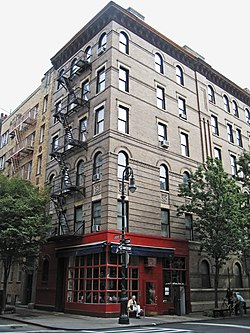
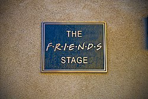

Tudo sobre Friends
Sobre
Friends é uma sitcom americana criada por David Crane e Marta Kauffman e apresentada pela rede de televisão NBC entre 22 de setembro de 1994 e 6 de maio de 2004, com um total de 236 episódios. A série girava em torno de um grupo de amigos que vivia no bairro de Greenwich Village, na ilha de Manhattan, na cidade de Nova York. A série foi produzida pela Bright/Kauffman/Crane Productions em associação com a Warner Bros Television. Os produtores executivos originais foram Crane, Kauffman e Kevin S. Bright, com muitos outros a serem promovidos posteriormente.
Kauffman e Crane começaram a desenvolver Friends sob o título de Insomnia Cafe em novembro de 1993. O diretor de cinema Cameron Crowe alega que a série foi inspirada no seu filme de 1992, Singles. Kauffman e Crane apresentaram a ideia a Bright, com quem tinham trabalhado anteriormente, e, juntos, apresentaram o projeto para a NBC. Após várias regravações e alterações, a série foi finalmente nomeada de Friends e estreou no cobiçado bloco Must See TV da NBC, mas foi somente após suas reprises da primeira temporada, transmitida depois dos episódios do já sucesso Seinfeld que começou a alavancar seu sucesso. As filmagens da série ocorreram no Warner Bros Studios, em Burbank, na Califórnia, em frente de uma plateia ao vivo. Depois de dez temporadas no ar, a série chegou ao seu fim. O final da série foi visto por 52,5 milhões de telespectadores estadunidenses, tornando-se o quarto episódio final de série mais assistido na história da televisão.
O seriado arrecadou seis Prêmios Emmy (incluindo um na categoria Emmy do Primetime para Melhor Série de Comédia), um Globo de Ouro, dois SAG Awards, e 56 outros prêmios com 152 nomeações. Em 2002, a revista especializada em televisão TV Guide lançou uma lista com os 50 melhores programas de televisão de todos os tempos, e Friends constava em 21.º lugar. Em 2015 a série foi disponibilizada no serviço de streaming Netflix em diversas partes do mundo, incluindo o Brasil. Em 1 de janeiro de 2020 a série deixou o catálogo da Netflix americana, rumo ao HBO Max, serviço de streaming da Warner Bros, que estreou em maio nos EUA. Em 1 de janeiro de 2021 a série saiu da Netflix na América Latina, pelos mesmos motivos, como parte da migração de diversos conteúdos das empresas do conglomerado WarnerMedia para o seu serviço de streaming HBO Max, lançado em junho de 2021 nos países latino-americanos. Um episódio especial de reunião do elenco, intitulado Friends: The Reunion, foi gravado em 2021, estreando na plataforma de streaming HBO Max a 27 de maio do mesmo ano.
VoltarPersonagens
A série apresentou os seis membros do elenco principal durante toda a sua exibição, com inúmeros personagens secundários recorrentes em todas as dez temporadas.
Jennifer Aniston — Rachel Green era uma mulher rica e mimada que, após abandonar o noivo no altar, foi morar com Monica, uma amiga do colegial. O primeiro trabalho de Rachel foi como garçonete no café Central Perk, se tornando, posteriormente, uma vendedora na Bloomingdale's e na Ralph Lauren, na quinta temporada. Vivia uma relação instável com Ross, na qual tiveram uma filha, Emma. Rachel, apesar de ser inicialmente dependente da família, durante o seriado amadurece e passa a ser uma mulher independente. No último episódio da 10.ª temporada, desiste de sua viagem a trabalho e passa a namorar novamente Ross.
Courteney Cox — Monica Geller, irmã de Ross e chef de cozinha, é obsessiva-compulsiva por limpeza e tem um espírito competitivo. Durante a adolescência, era obesa, o que é motivo de lembranças ruins e neuroses. Todos os personagens gostam de se encontrar no seu apartamento. Apesar dos defeitos, ela é a anfitriã-mor da série. Começa a namorar Chandler e se casa com ele na sétima temporada do programa. Na décima temporada, adotam dois filhos por uma barriga de aluguel, uma adolescente que engravidou por acidente e não sabia que teria gêmeos.
Lisa Kudrow — Phoebe Buffay saiu de casa aos 14 anos, e foi moradora de rua antes de conhecer seus amigos. Excêntrica e vegetariana, sua mãe se suicidou, e seu pai abandonou a família. Ela e sua irmã gêmea, Ursula, se odeiam. Conheceu seu meio-irmão, Frank, e aceitou ser "barriga de aluguel" para ele. Trabalha como musicista (criando músicas como "Gato Fedorento/Smelly Cat") e massagista. Na temporada final, ela se casa com Mike Hannigan, interpretado por Paul Rudd.
Matt LeBlanc — Joey Tribbiani é um ator ítalo-americano que se torna famoso por seu papel na telenovela Days of our Lives como doutor Drake Ramoray. Tornou-se companheiro de quarto de Chandler. Possui um cômico raciocínio lento, fome enorme e adoração por pizza. Tenta conquistar toda mulher que aparece em sua frente com sua famosa frase "How you doing?". Nutriu um amor por Rachel que foi superado.
Matthew Perry — Chandler Bing foi um processador de dados (emprego esse desconhecido pelos seus amigos) e odiava esse trabalho até que, na nona temporada, ele finalmente teve coragem de se demitir para trabalhar com publicidade (trabalho de que ele gostava de verdade). Ele é o mais cômico dos personagens, e conhecido por seu humor sarcástico. É questionado sobre sua sexualidade e tem um pai travesti, o que aumenta ainda mais os rumores sobre esse tema. Sua mãe é uma famosa escritora de romances adultos. Seu relacionamento mais longo, antes do casamento com Monica Geller, foi com a irritante Janice, eternamente conhecida pela velha e inconfundível frase: "Oh... my... God!". O namoro com Janice finalmente acabou na terceira temporada.
David Schwimmer — Ross Geller, irmão mais velho de Monica, é um paleontólogo que ama dinossauros e que se divorciou três vezes durante o seriado: da lésbica Carol (que lhe deu seu primeiro filho, Ben), da britânica Emily (cujo nome ele trocou pelo de Rachel no dia do casamento), e de Rachel (casaram-se bêbados em Las Vegas). Rachel e Ross tiveram uma filha juntos, Emma. É muito inteligente e apaixonado por Rachel desde o colegial.
VoltarElenco
Os membros do elenco principal estavam familiarizados com os telespectadores antes de seu papel em Friends, mas não eram considerados estrelas. Cox tinha a carreira mais promissora entre o elenco principal, quando ela foi inicialmente lançada no seriado, tendo aparecido em Ace Ventura: Pet Detective e Family Ties. Antes de seu papel em Friends, Kudrow já tinha interpretado Ursula Buffay em Mad About You e repetiu o duplo papel da irmã gêmea Ursula como um personagem recorrente durante vários episódios de Friends. LeBlanc apareceu como um personagem secundário na sitcom Married... with Children, e como personagem principal de seu spin-offs, Top of the Heap e Vinnie & Bobby. Após o fim de Friends fez seu próprio spin-off, Joey, que foi cancelado após duas temporadas por baixa audiência. Aniston e Perry já haviam aparecido em vários pilotos de sitcoms mal-sucedidas antes de serem lançados em Friends. Antes de seu papel em Friends, Schwimmer interpretara personagens secundários em The Wonder Years e NYPD Blue. Durante a décima temporada, todos os atores já tinham alcançado o status de celebridade.
Em seus contratos originais para a primeira temporada, cada membro do elenco era pago com 22 500 dólares estadunidenses por episódio. Os membros do elenco receberam salários diferentes na segunda temporada, entre 20 000 e 40 000 dólares por episódio. Antes das negociações de salário para a terceira temporada, o elenco decidiu entrar em negociações coletivas, apesar da preferência do Warner Bros. por ofertas individuais. Os atores receberam o mesmo salário do resto elenco, ou seja, Aniston e David Schwimmer tiveram seus salários reduzidos. As estrelas eram pagas, por episódio, em 75 000 dólares na terceira temporada, 85 000 dólares na quarta temporada, 100 000 na quinta e 125 000 por episódio na sexta temporada. O elenco recebeu salários de 750 000 dólares estadunidenses por episódio nas sétima e oitava temporadas, e 1 milhão de dólares por episódio na nona e décima temporadas. O elenco também recebeu royalties de sindicatos na quinta temporada.
O criador da série, David Crane, queria que todos os seis personagens fossem igualmente importantes e a série foi elogiada como sendo "o primeiro programa verdadeiramente conjunto". Os membros do elenco fizeram esforços para manter o formato do conjunto e não permitir que um dos membros dominasse a trama; eles entraram nas mesmas categorias para os prêmios de atuação, optaram por negociações coletivas, em vez de salários individuais, e pediram para aparecerem juntos em fotos de capas de revistas da primeira temporada.
Os membros do elenco se tornaram melhores amigos fora da tela também, e o ator convidado Tom Selleck relatou ter tido algumas vezes a sensação de ser deixado de fora. O elenco se manteve como bons amigos depois do fim da série, especialmente Cox e Aniston (Aniston se tornou madrinha da filha de Cox e David Arquette, Coco). No livro comemorativo oficial de despedida da série, Friends 'Til The End, cada ator reconheceu separadamente em suas entrevistas que o elenco se tornou sua família.
VoltarFilmagem
A primeira temporada foi filmada no Estúdio 5 do Warner Bros Studios, em Burbank, Califórnia. Executivos da NBC estavam preocupados que a decoração do café Central Perk era muito hip e solicitaram que a série fosse definida em um jantar, mas finalmente concordaram com a conceito de coffee house. As cenas da abertura foram filmadas em uma fonte no Rancho Warner Bros às 04h00, enquanto estava particularmente frio naquela manhã em Burbank. No início da segunda temporada, a produção mudou-se para o maior Estúdio 24, que foi renomeado para "The Friends Stage", após o final da série. As filmagens para a série começaram no verão de 1994 na frente de uma platéia ao vivo, que receberam um resumo da série para familiarizar-se com os seis personagens principais; um comediante contratado entretinha a platéia entre as tomadas. Cada episódio de 22 minutos de duração levou seis horas para ser filmado, o dobro do da maioria das gravações de comédia, principalmente devido às várias revisões e reescritas dos roteiros.

Embora os produtores sempre quisessem mostrar as histórias como se os atores estivessem no local, Friends nunca foi filmada em Nova York. Bright achava que as filmagens de episódios feitas fora do estúdio eram menos engraçadas e que o auditório era uma parte integrante da série. Quando a série foi criticada por representar Nova York incorretamente, quando era claro que o grupo de amigos não teria condições de arcar as despesas de apartamentos enormes em Greenwich Village, Bright disse que o set tinha que ser grande o suficiente para as câmeras, iluminação, e "para que o público possa ver o que está acontecendo"; os apartamentos também precisavam proporcionar um espaço para que os atores pudessem executar os roteiros cômicos. O final da quarta temporada foi filmado em locações em Londres, porque os produtores estavam cientes da popularidade da série no Reino Unido. As cenas foram filmadas em um estúdio com três platéias, cada uma composta por 500 pessoas. Estas foram as maiores audiências do programa ao longo de sua execução. O final da quinta temporada, que se passava em Las Vegas, foi filmado em estúdios da Warner Bros., apesar de Bright ter encontrado pessoas que pensavam que os episódios tinham sido filmados em Vegas.

Resumos das temporadas
Primeira temporada
primeira temporada introduz os seis personagens principais: Rachel, Monica, Phoebe, Joey, Chandler e Ross. Rachel chega no Central Perk, após deixar seu noivo Barry no altar e se mudar para o apartamento de Monica. Ross tenta constantemente dizer a Rachel que a ama, enquanto sua ex-esposa lésbica, Carol, está esperando seu bebê. Joey é apresentado como um ator lutando por seu espaço, enquanto Phoebe trabalha como massagista. Chandler termina com a namorada Janice (Maggie Wheeler), que frequentemente retorna em outros episódios. No final da temporada, Chandler acidentalmente revela que Ross ama Rachel, que percebe que ela se sente da mesma maneira.
Segunda temporada
A segunda temporada começa com Rachel descobrindo que Ross está namorando Julie (Lauren Tom), alguém que ele conheceu em sua pós-graduação. Rachel tenta dizer a Ross que ela também gosta dele, depois de suas tentativas falhas na primeira temporada, embora os personagens finalmente comecem um relacionamento. Joey consegue um papel numa versão fictícia da novela Days of Our Lives, mas seu personagem é morto após ele alegar que escreve muitas das suas próprias falas. Monica começa a namorar Richard (Tom Selleck), recentemente divorciado e 21 anos mais velho que ela. No final da temporada, terminam o seu relacionamento, quando eles percebem que ao contrário de Monica, Richard não quer ter filhos.
Terceira temporada
A terceira temporada assume um formato serializado significativamente maior. Rachel começa a trabalhar na Bloomingdale's, uma cadeia de lojas de departamento de luxo, e Ross fica com ciúmes de seu colega de trabalho, Mark. Rachel decide dar um tempo no namoro, e Ross, ferido e embriagado, dorme com outra garota, fazendo com que Rachel rompa com ele. Após acreditar que não tem família, exceto sua irmã gêmea Ursula (Lisa Kudrow), Phoebe conhece seu meio-irmão Frank Buffay Jr. (Giovanni Ribisi) e sua mãe biológica, também chamada Phoebe (Teri Garr). Joey desenvolve um relacionamento com sua parceira de cena Kate (Dina Meyer), e Monica começa um relacionamento com o milionário Pete Becker (Jon Favreau).
Quarta temporada
Na estreia da quarta temporada, Ross e Rachel se reconciliam brevemente. Phoebe torna-se uma mãe de aluguel para o meio-irmão e sua esposa Alice (Debra Jo Rupp). Monica e Rachel são forçados a mudar de apartamentos com Joey e Chandler, depois de perder uma aposta, mas conseguem voltar subornando-os com ingressos para a temporada dos Knicks e um beijo de um minuto (fora da tela) entre as meninas. Ross começa a namorar uma mulher britânica chamada Emily (Helen Baxendale) e ao final da temporada organiza seu casamento em Londres. Chandler e Monica dormem juntos, e Rachel decide participar do casamento de Ross e Emily. Enquanto diz seus votos, Ross utiliza o nome de Rachel no altar, ao invés do da sua noiva, para o choque de sua noiva e dos convidados.
Quinta temporada
Na quinta temporada, Monica e Chandler tentam manter seu novo relacionamento em segredo de seus amigos. Phoebe dá a luz a trigêmeos no centésimo episódio. Ela dá à luz um menino, Frank Jr. Jr., e duas meninas: Leslie e Chandler (originalmente eram para ser dois meninos e uma menina, mas decidiu-se manter o nome Chandler, apesar de o bebê ser uma menina). O casamento de Ross e Emily é cancelado por ela, que se sente ameaçada por Rachel, quando Ross diz não estar disposto a desistir de sua amizade com Rachel para atender às exigências de Emily. Phoebe começa um relacionamento com o policial Gary (Michael Rapaport). Monica e Chandler tornam seu relacionamento público, para surpresa e felicidade de seus amigos. Eles decidem se casar em uma viagem para Las Vegas, mas mudam seus planos depois de encontrarem Ross e Rachel, ainda bêbados, recém-casados na mesma capela.
Sexta temporada
Na sexta temporada, depois de descobrir que estão casados, Ross e Rachel concordam em anular o casamento, mas Ross decide não querer se divorciar três vezes antes dos trinta anos e mente para Rachel, dizendo a ela que ele anulou a união, quando na verdade não o fez. Alguns episódios depois ela descobre a verdade e força Ross a seguir adiante com a anulação, mas não conseguem porque Rachel adiciona mentiras sobre Ross nos formulários, sendo então obrigados a dar entrada no divórcio. Chandler e Monica decidem que é cedo para se casarem, e ao invés disso, passam a morar juntos. Chandler muda-se para o apartamento de Monica, Rachel muda-se para o de Phoebe e Joey acaba sozinho no seu. Algum tempo depois, Janine muda-se para casa de Joey, e eles mais tarde acabam namorando. Mais tarde na temporada, um incêndio destrói o apartamento de Phoebe e Rachel. Então enquanto Rachel aloja-se na casa de Chandler e Monica, Phoebe fica em situação menos privilegiada, no apartamento de Joey. Contudo, quando os bombeiros descobrem que o incêndio foi iniciado por Rachel, Phoebe e Rachel invertem as moradias. Rachel diverte-se na casa de Joey, enquanto Phoebe incomoda-se com a compulsão de Monica com limpeza. Chandler planeja pedir Monica em casamento. No último episódio, ele não consegue fazer o pedido de casamento num restaurante chique pois Richard (Tom Selleck), ex-namorado de Monica, aparece. Pouco mais tarde, Richard vai até o restaurante onde Monica trabalha e diz que ainda a ama. Ela chega a pensar em voltar para Richard quando Chandler começa a fingir que não quer se casar (tudo para aumentar o suspense para quando realmente for propor), mas Joey explica a situação a ela. Quando Chandler volta para pedir em casamento, quem acaba pedindo é ela.
Sétima temporada
Na sétima temporada, o apartamento de Phoebe e Rachel é reformado após o incêndio que quase o destruiu, mas quando retornam, descobrem que o que eram antes dois dormitórios, foi transformado em um único dormitório (porém maior), o que anima Phoebe a voltar a morar sozinha nele, enquanto Rachel continua a dividir apartamento com Joey. Joey retorna triunfante ao seu papel em Days of Our Lives, mas desta vez volta com um novo cérebro (após um duvidoso transplante), o da personagem Jessica Lockhart (Susan Sarandon). No último episódio desta temporada, é hora do casamento de Chandler e Monica, mas na noite anterior Chandler se apavora e desaparece. Enquanto ele está fora, Phoebe encontra um teste de gravidez positivo no banheiro de Monica, e acredita que a amiga esteja grávida. Phoebe e Ross encontram Chandler em seu escritório e o convencem a retornar. Porém, já mais próximo da hora da cerimônia, Chandler se apavora novamente, dessa vez com a notícia da suposta gravidez de Mônica e aparentemente foge (mas depois vê-se que ele se arrependeu e foi comprar uma pequena roupa de bebê no gift-shop do hotel). Monica e Chandler se casam, mas quando o noivo diz à noiva que sabe de sua gravidez, ela diz que não está grávida, e que o teste encontrado por Phoebe não era seu. Já no final do episódio, fica claro que a pessoa grávida é na verdade Rachel.
Oitava temporada
Na oitava temporada, confirma-se que Rachel está grávida, e já a partir do segundo episódio os amigos, um após o outro, vão descobrindo que o pai é na verdade Ross. Alguns episódios depois, Ross e Rachel entram numa discussão para deixar claro quem teve a iniciativa de transar na fatídica noite. Rachel afirma que foi Ross, mas esse tem uma prova contundente, uma fita que por acidente gravou a relação dos dois (Ross estava na verdade filmando-se para praticar sua capacidade de flerte). Após convencer Rachel que a gravação foi por acidente, Ross e os outros assistem à fita e comprovam que foi Rachel quem tomou iniciativa. Ao continuarem morando juntos, Joey começa a se apaixonar por Rachel. Percebendo que Ross não está exercendo seus deveres parentais como desejava, Joey, ainda que relutante, convence Rachel a mudar-se para o apartamento do pai da criança que está esperando, e assim ela faz. Mais tarde Joey, fala com Ross sobre seus sentimentos por Rachel, ele fica chocado, no entanto é convencido por Monica a falar com Joey, na conversa ele revela que Rachel foi seu primeiro amor então Ross sugere que ele revele seus sentimentos a ela, e ele faz, porém ela educadamente o rejeita. No último episódio da temporada, ela dá a luz a uma menina que ainda não tinha nome. Quando Rachel pede para Monica falar os nomes escolhidos para seus futuros filhos, Rachel adora o nome feminino escolhido por Monica. Monica então permite que Rachel dê o nome à sua filha recém-nascida, que então passa a se chamar Emma.
Nona temporada
Na nona temporada, Ross e Rachel têm uma discussão sobre morarem juntos. Sentindo não ser certo morar com Ross tendo um bebê juntos mas não estando num relacionamento, Rachel decide mudar-se novamente para a casa de Joey, levando sua filha Emma consigo. O emprego de Chandler começa a requerer que ele passe a maior parte da semana em Tulsa, Oklahoma. Ele aguenta por algum tempo, mas quando tem que passar o Natal longe da esposa e uma das sócias da empresa começa a dar em cima dele, ele pede demissão e procura um emprego na área de publicidade. Chandler e Monica tentam engravidar, mas não conseguem, por conta de dificuldades genéticas que os impedem de ter filhos juntos, fazendo deles um casal praticamente estéril. Decidem então partir para a adoção. Phoebe começa a namorar um homem chamado Mike Hanigan (Paul Rudd). Eles se dão muito bem e decidem morar juntos, mas quando ela pergunta a ele sobre o futuro do relacionamento, Mike diz a ela que por já ter passado por um divórcio, não quer se casar novamente. Como Phoebe deseja se casar, eles terminam. Rachel começa a se apaixonar por Joey. No último episódio da temporada, o grupo vai a Barbados, onde Ross participará como palestrante de um seminário sobre paleontologia. Phoebe leva sua antiga paixão, David (Hank Azaria) e Joey leva sua namorada Charlie (Aisha Tyler), amiga de Ross. Monica, ao descobrir que David está tentando fazer Phoebe esquecer Mike pedindo-a em casamento, liga para Mike e o intima a tomar uma atitude. Apesar de relutar de primeira, Mike decide ir até Barbados e pedir Phoebe em casamento antes de David. Mesmo confusa, Phoebe recusa a proposta de Mike (mas decide reatar o romance), e termina tudo com David. Joey e Charlie terminam quando percebem que têm pouco em comum, e logo em seguida Joey descobre que Rachel gosta dele. No meio tempo, Ross e Charlie se beijam e são flagrados por Joey, que decide então ir atrás de Rachel. Ao chegar em seu quarto, Joey a beija.
Décima temporada
O relacionamento de Rachel e Joey dura apenas três episódios na décima temporada, pois eles percebem que são amigos demais e que o sexo seria impossível. Ross e Charlie também não progridem no relacionamento; quando ele tenta conseguir uma bolsa de estudos, é entrevistado por um ex-namorado de Charlie, Benji (Greg Kinnear). Quando esta se manifesta, ele confessa que ainda sente algo por ela e os dois parecem reatar o relacionamento ali mesmo, ignorando Ross. Alguns episódios mais tarde, Mike pede Phoebe novamente em casamento, recebendo um sim como resposta. Eles se casam logo depois. Chandler e Monica tentam adotar o bebê de uma mulher chamada Érica (Anna Faris), que está grávida e não poderá cria-lo. Eles também decidem se mudar para o interior do estado. No episódio final, Érica dá a luz a gêmeos, um casal. O menino se chama Jack, enquanto a menina se chama Érica. Rachel consegue uma entrevista para a Gucci, mas seu chefe na Ralph Lauren está no mesmo restaurante onde a entrevista acontece, e a demite; sabendo que ela já possuía um emprego, seu "futuro" chefe também deixa de contratá-la. Ao tirar suas coisas do escritório, ela encontra Mark, que lhe consegue um novo emprego, desta vez em Paris. Os cinco amigos organizam uma festa de despedida, e ela se despede de todos separadamente, com exceção de Ross, que se sente ignorado. Ross fica muito irritado e briga com Rachel. Ela então aparece no apartamento dele dizendo que ela só não se despediu dele pois era muito difícil, já que ele era a pessoa mais especial para ela, o que os leva a dormirem juntos. No último episódio da série, Ross descobre-se ainda amando Rachel, e decide ir atrás dela no aeroporto para demove-la da ideia de ir para Paris. Quando finalmente a encontra, ela surpreendentemente diz não. Ross volta arrasado para o seu apartamento, e encontra uma mensagem dela na secretária eletrônica, dizendo que ela ainda o ama e que está tentando descer do avião. Ao fim da mensagem, Rachel aparece na porta de Ross e eles se beijam. A série acaba com Chandler e Monica levando os gêmeos e os quatro amigos para mais um café no Central Perk. A última imagem é um rápido tour pelo apartamento vazio, seis chaves do apartamento, uma de cada personagem e um close fechando em cima da moldura que envolve o "olho-mágico" da porta, o símbolo mais emblemático da série.
VoltarPremiações
Para preservar o formato de "série de grupo", os membros do elenco principal decidiram inscrever-se nas mesmas categorias de prêmios de atuação. Começando com a oitava temporada da série, os atores decidiram apresentar-se na votação de ator principal, ao invés dos campos de melhor ator coadjuvante. A série foi indicada a 63 Primetime Emmy Awards, vencendo seis. Aniston e Lisa Kudrow são os únicos membros do elenco principal que ganharam um Emmy, enquanto Cox foi a única atriz que não foi indicada. A série ganhou o Emmy de 2002 na categoria de "Melhor série de comédia", com nomeações em 1995, 1996, 1999, 2000 e 2003. A série também ganhou um American Comedy Award, um GLAAD Media Award, um Golden Globe Award, três Logie Awards, seis People's Choice Awards, um Satellite Award e um Screen Actors Guild Awards.
VoltarAudiência
A tabela abaixo indica as classificações de Friends na televisão estadunidense, onde se classificou consistentemente no top ten da televisão.[95] "Posição" refere-se à forma como Friends foi avaliado em comparação com outras séries de televisão que foram ao ar durante o horário nobre correspondente à sua temporada. As temporadas tendem a começar em setembro e terminam durante maio do ano seguinte. "Visitantes" refere-se ao número médio de espectadores de todos os episódios originais transmitidos durante as temporadas da série. A estreia da temporada é a data em que o primeiro episódio da temporada foi ao ar e o final é a data que o episódio final da temporada foi ao ar. Até agora, Friends tem sido a última sitcom que alcançou o primeiro lugar em audiência na televisão, sendo os seus sucessores CSI: Crime Scene Investigation e American Idol.
| Nome do DVD | Episódios | Datas de lançamento - Região 1 | Datas de lançamento - Região 2 | Datas de lançamento - Região 3 |
|---|---|---|---|---|
| Primeira Temporada Completa | 24 | 30 de abril de 2000 | 29 de maio de 2000 | 4 de outubro de 2006 |
| Segunda Temporada Completa | 24 | 3 de setembro de 2002 | 29 de maio de 2000 | 4 de outubro de 2006 |
| Terceira Temporada Completa | 25 | 1 de abril de 2003 | 29 de maio de 2000 | 4 de outubro de 2006 |
| Quarta Temporada Completa | 24 | 15 de julho de 2003 | 29 de maio de 2000 | 4 de outubro de 2006 |
| Quinta Temporada Completa | 24 | 4 de novembro de 2003 | 29 de maio de 2000 | 4 de outubro de 2006 |
| Sexta Temporada Completa | 25 | 27 de janeiro de 2004 | 17 de julho de 2000 | 4 de outubro de 2006 |
| Sétima Temporada Completa | 24 | 6 de abril de 2004 | 25 de outubro de 2004 | 4 de outubro de 2006 |
| Oitava Temporada Completa | 24 | 9 de novembro de 2004 | 25 de outubro de 2004 | 4 de outubro de 2006 |
| Nona Temporada Completa | 24 | 8 de março de 2005 | 25 de outubro de 2004 | 4 de outubro de 2006 |
| Décima Temporada Completa | 18 | 15 de novembro de 2005 | 25 de outubro de 2004 | 4 de outubro de 2006 |
Tema de abertura
O tema de abertura de Friends é uma canção de The Rembrandts, banda de Danny Wilde e Phil Solem. Os Rembrandts estavam elaborando um novo álbum em 1994. Antes de seu lançamento, a dupla tinha, anonimamente, gravado uma música tema para um programa de TV. A música que gravaram, "I'll Be There for You", esteve entre as músicas mais pedidas na rádio (mesmo apenas como um tema de 32 segundos). Foram obrigados (pela gravadora) a adicionar uma versão de corpo inteiro da música para seu terceiro disco, L.P., de 1995[179]. "I'll Be There for You" se tornou uma canção presente nas rádios e que atingiu #17 no Hot 100; com o disco atingindo posição #23 na Billboard 200. L.P., o disco lançado com a referida música, se tornou disco de platina.
Voltar